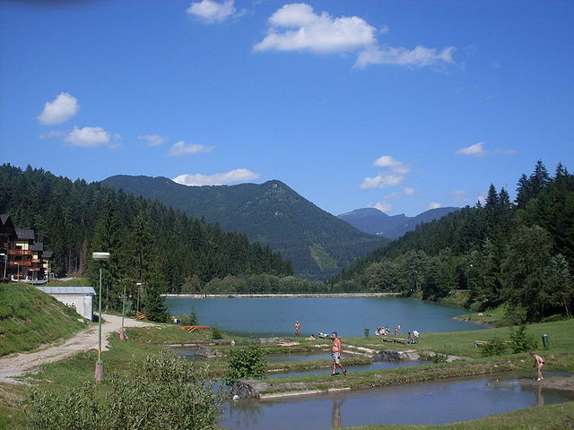
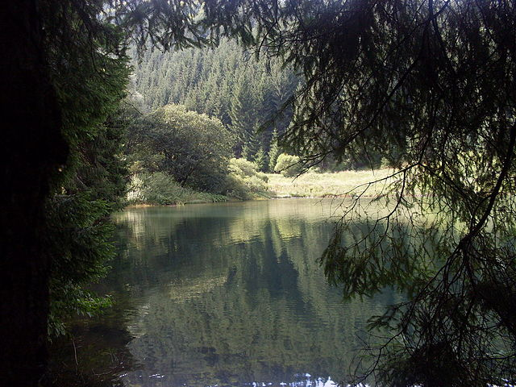

Prostredie
Klíma
Ružomberok sa nachádza na rozhraní mierne chladnej a mierne teplej klimatickej oblasti. Ročný úhrn zrážok sa pohybuje od 720 mm vo východnej časti mesta až po 770 mm v západnej časti mesta. Horské oblasti zasahujúce do katastra majú úhrn zrážok až 1 000 mm (Smrekovica). Najviac zrážok padne v júni a júli, najsuchšími mesiacmi sú január, september a október. Centrum mesta má oveľa menej slnečného svitu ako okolité svahy. Je to spôsobené dlhtorvajúcou hmlou v jesennom a zimnom období. Vzhľadom na uzavretú dolinu a priemyselnú výrobu v meste patrí Ružomberok na popredné miesta rebríčka miest, kde sa vytvára na Slovensku hmla. Najvyššia teplota zaznamenaná v meste je 36 °C (2007) a najnižšia −36 °C (1986).
Ružomberok má najkratšie trvanie snehovej pokrývky spomedzi okolitých miest (aj nižšie ležiacich), čo je spôsobené zrážkovým tieňom okolitých hôr. Priemerný počet dní so snehovou pokrývkou je 68. Najdlhšie trvanie snehovej pokrývky v jednom roku bolo 130 dní (2006). Najviac snehu bolo 65 cm (2006) alebo v roku 1985 (91 cm).
Vodné toky
Mestom preteká rieka Váh, do ktorého sa v katastrálnom území mesta vlieva z ľavej strany rieka Revúca, z pravej potok Likavčianka. Obe spomínané rieky odvodňujú menšie toky z pohorí Veľká Fatra a Chočské vrchy. Najznámejšími prítokmi Váhu sú Hrabovský potok, ktorý preteká nádržou Hrabovo a Čutkovský potok pretekajúci nádržou Čutkovo. Okrem nich pritekajú do intravilánu Ružomberka menšie horské bystrinky, ktoré sa strácajú v podzemnom systéme mesta. Ide najmä o toky v južnej časti mesta, v oblasti Podsuchej ústia do Revúcej sprava Vyšný Matejkov a Matejkovský potok, v oblasti Jazierca sa z tej istej strany vlieva Trlenský potok.
Vodné plochy
Na katastrálnom území mesta Ružomberok sa nachádzajú dve väčšie vodné plochy. Sú to vodné nádrže Hrabovo a Čutkovo, ktoré ležia na juhozápadnom okraji mesta. Ide o umelo vytvorené vodné diela, ktoré mali slúžiť ako zásobáreň vody pre bavlnárske závody, s ktorými sú prepojené systémom potrubí. Rozloha oboch nádrží je malá, cca do 1,5 ha. Obe nádrže sú napájané horskými bystrinami z pohoria Veľká Fatra. V súčasnosti sa vodné diela využívajú na rekreačné účely najmä v lete.
- Vodná nádrž Hrabovo 
- Vodná nádrž Čutkovo
- 